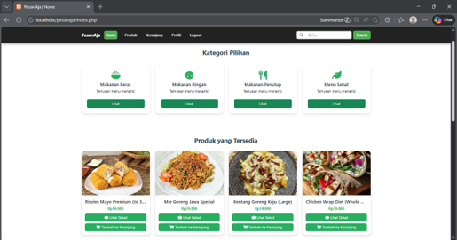

Halo, saya
Muhammad Indra Dwi Syahputra
Mahasiswa Informatika Universitas Pembangunan Nasional Veteran Jawa Timur
Mahasiswa Informatika yang tertarik pada pengembangan website, pemrograman, dan teknologi.
Website ini bisa diakses online: iammids.github.io/portofolio

About Me
Halo, Saya merupakan mahasiswa semester 1 Program Studi Informatika. Saya memiliki ketertarikan pada bidang Web Development, Full Stack Development, dan Internet of Things (IoT). Saya terus mengembangkan kemampuan pemrograman menggunakan HTML, CSS, JavaScript, PHP, MySQL, C, dan C++ pada tingkat menengah.
Selain pengembangan web, saya juga memiliki pengalaman di bidang robotika dan IoT. Saya pernah meraih Juara 1 Industrial Automation Robotic Competition (IARC) yang diselenggarakan oleh Departemen Teknik Elektro Otomasi ITS serta memperoleh peringkat 3 OSN Informatika tingkat Kabupaten/Kota Gresik. Saya juga pernah mengerjakan beberapa proyek berbasis Arduino, seperti maket interaktif, robot pembersih, serta alat pengukur jarak menggunakan sensor ultrasonik dan LCD.
Saat ini, saya terus memperdalam kemampuan di bidang pengembangan perangkat lunak dan teknologi IoT serta membangun berbagai proyek sebagai bagian dari perjalanan saya untuk berkembang menjadi seorang developer yang mampu menggabungkan software dan hardware dalam menciptakan solusi yang bermanfaat.
Informatika
Universitas Pembangunan Nasional "Veteran" Jawa Timur 2026 - SekarangSaintek / MIPA
SMA Muhammadiyah 1 Gresik 2023 - 2026Web Development, IOT (Arduino bahasa C/C++), dan sedikit tertarik di dunia Game Developer
Surabaya, Indonesia
Skills
HTML
CSS
JavaScript
PHP
MySQL
C++
Hasil Karya
Projects

Full-Stack Web Development
Pesan Aja
Website penjualan makanan berbasis PHP dan MySQL yang dibuat sebagai karya akhir program PRODISTIK ITS.
Perjalanan & Pencapaian
Achievements & Certification
1st Place
Industrial Automation and Robotic Competition (IARC)
Juara 1 Kategori Line Tracer Microcontroller pada IARC yang diselenggarakan oleh Departemen Teknik Elektro Otomasi ITS
2025Lihat Sertifikat
3rd Place
OSN-K Informatika
Meraih peringkat 3 dalam OSNK Informatika tingkat Kabupaten/Kota Gresik yang diselenggarakan oleh Dinas Pendidikan
2025Lihat Sertifikat
Top 4 Graduate
Prodistik - Programming
Meraih peringkat ke-4 sebagai lulusan terbaik bidang Programming pada program PRODISTIK ITS.
2026Lihat Sertifikat